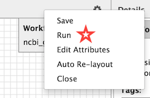
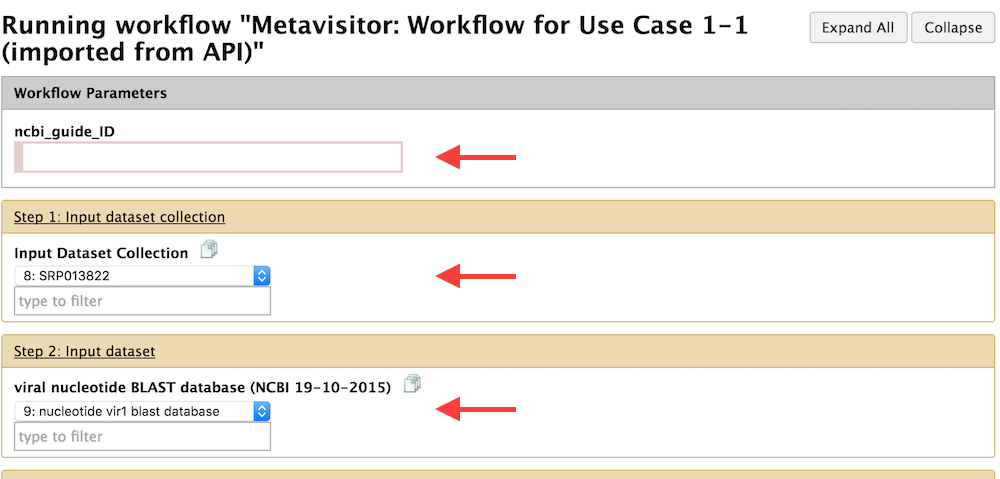
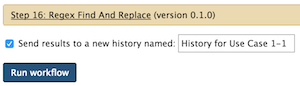
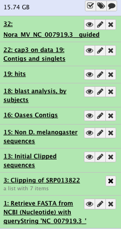

Histories for Use Cases 1-1, 1-2, 1-3 and 1-4¶
As you will see, Histories 1-1, 1-2 and 1-3 are generated in the same way, using their corresponding workflows. These workflows are available in your Galaxy top menu. An important thing to remember is that you will always start from the Input data for Use Cases 1-1, 1-2, 1-3 and 1-4 history, run the appropriate workflow, sending the outputs of the workflow in a new history named accordingly.
History for Use Case 1-1.¶
1. As aforementioned, ensure that you are in the Input data for Use Cases 1-1, 1-2, 1-3 and 1-4 history.¶
You can always control this by using the top menu Users → Saved History and selecting the desired history. If you don't see the History right bar, just click in addition the top menu Analyze Data
2. Select the appropriate workflow¶
- Click now on the Workflow top menu
- Select the workflow "Metavisitor: Workflow for Use Case 1-1" and to see the workflow, select the submenu "Edit"
-
Now that you see the workflow, you can directly execute it by clicking the top right wheel icon and selecting "Run"

3. Select the appropriate parameters before running the workflow¶
You now see a page with all the workflow steps, whose top part looks like:

-
As pointed by the first red arrow, a parameter has to be provided at runtime of the workflow: the ncbi_guide_ID. In this Use Case as in the other 1-2 and 1-3 Use Cases, you will paste in the ncbi_guide_ID field the
NC_007919.3_value. This is the NCBI identifier for the Nora virus genome sequence which will be retrieved from Genbank during the workflow and used as a guide for the final reconstruction of the Nora virus genome sequence that is "present" in the analyzed small RNA sequencing datasets. -
You have to select an Input dataset collection for Step 1 (second red arrow). However, as there is only one dataset collection in the input history (the one we have prepared in the previous chapter), there is no other option in the menu than "SRP013822".
-
You have to select the viral nucleotide Blast database for Step 2. Here again there is indeed nothing else to select than the "nucleotide vir2 blast database", just because there is only one dataset in the input history with the "blast database" type.
-
You can review the other steps of the workflow. But there is no other selection to perform before running the workflow.
4. Running the workflow sending the outputs in a new history¶
We are almost ready, but before clicking the "Run Workflow" button there is an important thing to do: - Check the "Send results to a new history" checkbox as shown Here

- And edit the field to "History for Use Case 1-1"
- You can now click the "Run workflow" button. This trigger the workflow run. After a few seconds (may be take a while for complex workflows), you will see an alert that the workflow is started, and a link to navigate to the newly created history.
When the workflow has finished, if you navigate to the created "History for Use Case 1-1", you should see:

Note that 30 datasets have been hidden by the workflow for clarity. You just have to click on the "hidden" link to unhide these datasets
Histories for Use Cases 1-2 and 1-3¶
Histories for Uses Cases 1-2 and 1-3 are produced in almost the same way as History for Use Case 1-1.
Do exactly as described for Use Case 1-1 and
- Remember to go back to the Input data for Use Cases 1-1, 1-2, 1-3 and 1-4 history and be sure you are going to run the workflow from that history.
- Select the appropriate workflow !
- Remember to Check the "Send results to a new history" checkbox, rename the new history appropriately before pressing the "Run workflow" button
History for remapping in Use Cases 1-1,2,3¶
Before running the workflow for remapping in Use Cases 1-1,2,3, we need to collect datasets generated in the histories for Use Case 1-1, 1-2 and 1-3 and send them in our Input data for Use Cases 1-1, 1-2, 1-3 and 1-4 history.
Update the Input data for Use Cases 1-1, 1-2, 1-3 and 1-4 history¶
This is because the purpose of the workflow for Use Case 1-4 is to remap the raw read sequencing datasets to the viral genomes generated in the previous histories as well as to 2 different Nora virus genomes deposited in Genbank (NC_007919.3 and JX220408).
Thus, go back to the Input data for Use Cases 1-1, 1-2, 1-3 and 1-4 history and
- Use the
Retrieve FASTA from NCBIMetavisitor tool to retrieve the NC_007919.3 sequence. - Use the
Regex Find And Replacetool on the Retrieve FASTA from NCBI (Nucleotide) with queryString 'NC_007919.3' dataset as an input, and put>.+as Find Regex parameter and>NC_007919.3as Replacement parameter. This is just to change the header of the FASTA file and make it more readable. Rename the generated dataset NC_007919.3 for clarity. - Use the
Retrieve FASTA from NCBIMetavisitor tool to retrieve the JX220408 sequence. - Use the
Regex Find And Replacetool on the Retrieve FASTA from NCBI (Nucleotide) with queryString 'JX220408' dataset as an input, and put>.+as Find Regex parameter and>JX220408.1as Replacement parameter. Rename the generated dataset JX220408.1 for clarity. - Click on the top wheel history icon, select
Copy Datasets; select "History for Use Case 1-1" as a Source History, click on the last dataset of the history (Nora_MV_NC_007919.3_guided), select "Input data for Use Cases 1-1, 1-2..." as Destination History, and click "Copy History Items". - Repeat the previous operation for History for Use Case 1-2, selecting the last "Nora_raw_reads_NC_007919.3_guided" dataset.
- And Repeat the previous operation for History for Use Case 1-3, selecting the last "Nora_Median-Norm-reads_NC_007919.3_guided" dataset.
- You may have to refresh your
Input data for Use Cases 1-1, 1-2, 1-3 and 1-4history to reveal the three copied datasets - The last step is to create a dataset collection with the 5 Nora virus genomes that you have now in your input data history: just click on the checkbox icon at the top of the history bar, select the 5 corresponding data sets (NC_007919.3, JX220408.1, Nora_MV_NC_007919.3_guided, Nora_raw_reads_NC_007919.3_guided and Nora_Median-Norm-reads_NC_007919.3_guided), click on the
For all selected...button, selectBuild Dataset List, name this list "Nora virus genomes", and press theCreate listbutton.
We are done with the input data history update !
Generate the History for remapping in Use Cases 1-1,2,3¶
- In the workflow top menu of Galaxy, select the
Metavisitor: Workflow for remapping in Use Cases 1-1,2,3workflow and directly select therunoption (you may also look at the workflow before by selection theeditoption). - Specify "SRP013822" for the step 1 option
- Specify "Nora virus genomes" for the step 2 option (you see now why we had to create a dataset collection)
- Click at the bottom the checkbox
Send results to a new history - Edit the field that shows up by typing in it: "History for remapping in Use Cases 1-1,2,3"
- Execute the workflow by clicking the
Run workflowbutton. - After few seconds, you may follow the link to the new history running !
History for remapping in Use Case 1-4¶
This is a simple history to generate because basically, it is similar to the History for Use Case 1-1, but with a slightly modified (and simplified workflow).
Navigate back again to your "base" history Input data for Use Cases 1-1, 1-2, 1-3 and 1-4¶
Now the sequence of operations to be performed should be more familiar to you:
- Top menu
Workflow - Select
Metavisitor: Workflow for Use Case 1-4and therunoption - Step 1 (Input Dataset Collection), select the
SRP013822option - Step 2 (viral nucleotide BLAST database), select
nucleotide vir2 blast database(forced option if everything went well - only one blast database is available in this input history) - Click at the bottom the checkbox
Send results to a new history - Edit the field that shows up by typing in it: "History for Use Case 1-4"
- Execute the workflow by clicking the
Run workflowbutton. - After few seconds, you may follow the link to the new "History for Use Case 1-4" running !